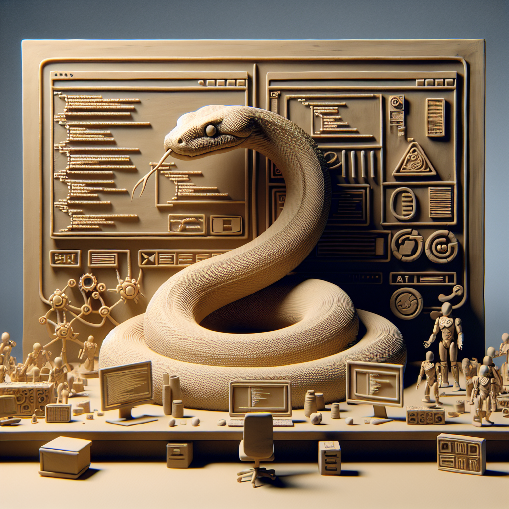

The future of Python and AI
In my latest blog post, I delve into the exciting topic of the future of Python and AI. As a Python developer at SupplyCopia, I am constantly amazed at the potential that AI holds for our company.
With advancements in machine learning and AI, there is no doubt that the role of Python will continue to be crucial. Python's ease of use, extensive library ecosystem, and powerful data analysis capabilities make it the go-to language for AI development.
One of the most exciting aspects of the future of Python and AI is the potential for automation. As AI algorithms become more sophisticated, they can help streamline processes and make SupplyCopia more efficient. Whether it's automating data analysis, optimizing supply chain operations, or enhancing customer service through chatbots, AI has the power to revolutionize our company.
Another area where Python and AI can make a significant impact is in predictive analytics. By analyzing large amounts of data, AI algorithms can identify patterns and trends, enabling us to make data-driven decisions. This can lead to improved forecasting, better inventory management, and enhanced customer insights.
Furthermore, Python's compatibility with popular machine learning frameworks like TensorFlow and PyTorch opens up endless possibilities for innovation. From developing advanced deep learning models to building intelligent recommendation systems, Python provides a solid foundation for AI development.
As SupplyCopia embraces the future of Python and AI, we are committed to staying at the forefront of technological advancements. As a Python developer, I am excited to be a part of this journey and contribute to the development of AI-powered solutions that will shape the future of our company.
Stay tuned for more updates and insights on the intersection of Python, AI, and SupplyCopia. The possibilities are endless, and I can't wait to see what the future holds.